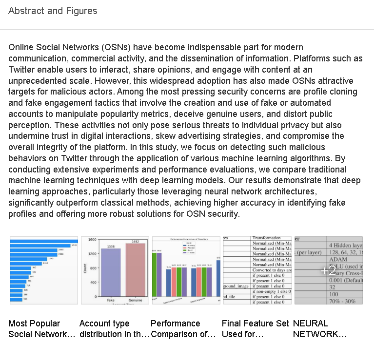
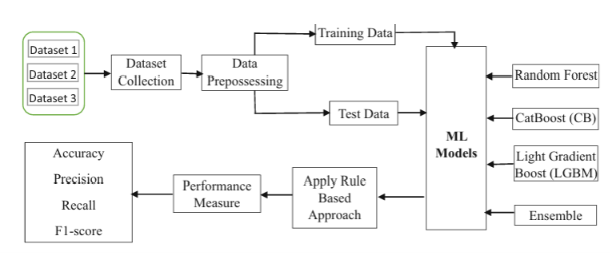

Saptak Sil
Ph.D. student at IIT Kharagpur · Advised by Prof. Ayan Chowdhury
I work on 3D computer vision, with a focus on understanding the part structure of 3D shapes from point clouds. My current work spans two directions: plant part segmentation and unsupervised 3D shape co-segmentation.
Both build on Point-MAE point cloud features, combined with clustering and prototype-based matching, to produce semantic and instance-level parts that stay consistent across shapes and plant species.
Next, I am extending this to single-image 3D scene understanding: lifting an ordinary photo into a 3D scene and segmenting it into people, objects and their parts, so that part- and co-segmentation work on everyday images rather than only on scanned point clouds.
Research
Current Work
Plant Part Segmentation from Point Clouds
Joint semantic and instance segmentation of plant point clouds (leaves, stems).
Unsupervised 3D Shape Co-segmentation
Discovering consistent parts across a collection of 3D shapes without any part labels.
Interest
From a Single Image to Part-Aware 3D Scenes
Lifting a single RGB image into a 3D scene and segmenting it in 3D into the scene layout, objects and their parts.
Publications

Fake Profile Detection on Online Social Networks Using Machine Learning
JoCAAA, 2025
This work studies fake profile detection on online social networks using machine learning and deep learning techniques. The method compares multiple models for identifying suspicious or malicious user profiles in online social networking platforms.

Detecting Profile Cloning on Online Social Networks with Machine Learning
CICBA (Springer)
Focused on identifying and mitigating profile cloning threats in online social networking platforms using machine learning.